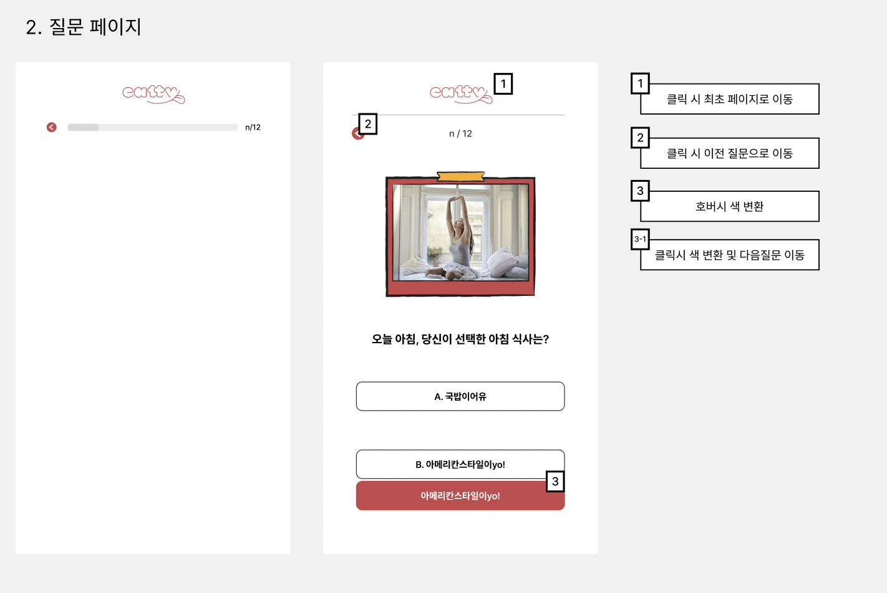
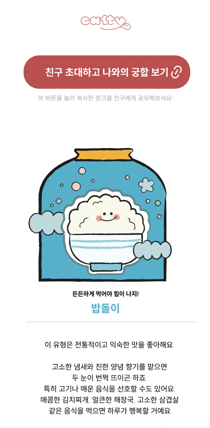
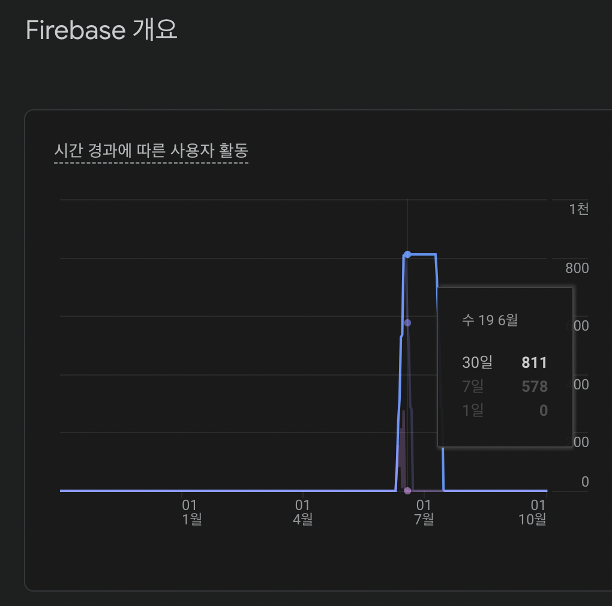
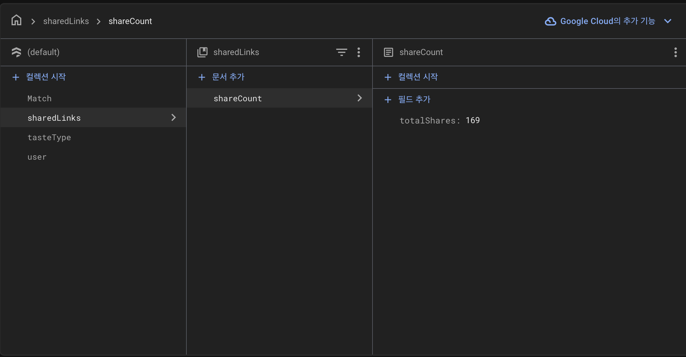

“상대의 입맛을 몰라서 메뉴를 못 고를까?”
Eatty는 음식 취향을 바탕으로 함께 먹을 메뉴를 고르는 서비스를 구상하며 시작했습니다. 처음에는 데이트 식당을 주로 찾는 20·30대 남성이 상대방의 입맛을 몰라 선택에 어려움을 겪을 것이라고 생각했습니다. 그래서 입맛 궁합을 계산하는 추천 알고리즘부터 만들려 했습니다.
하지만 ‘정말 그 문제를 겪고 있는가’를 먼저 확인하라는 피드백을 받았습니다. 그래서 사람들의 실제 식당 탐색 과정을 살펴보기로 했습니다.
식당을 고를 때 사람들은 여러 앱을 오갔습니다
판교에서 스티커 설문을 진행하고, 약 20명에게 데이트 상황을 제시해 식당을 고르는 과정을 관찰했습니다. 참가자들은 인스타그램에서 후보를 찾은 다음 네이버지도·카카오맵에서 위치, 사진, 최신 리뷰와 메뉴를 다시 확인했습니다. 후보를 비교하고 상대에게 공유하는 행동도 반복됐습니다.
- 인스타그램갈 만한 곳 발견
- 지도 앱위치·사진·리뷰·메뉴 재확인
- 후보 비교여러 곳을 오가며 검토
- 상대와 공유함께 갈 곳 결정
반대로 평소 가고 싶은 식당을 저장해두는 사람은 이 과정에서 큰 불편을 느끼지 않았습니다. ‘남성이라면 모두 상대의 취향을 몰라 곤란할 것’이라는 초기 가설로는 실제 행동의 차이를 설명하기 어려웠습니다.
추천 알고리즘 대신, 취향을 확인하고 나누는 경험부터
복잡한 맛집 추천 기능을 한꺼번에 만들기보다 음식 취향 테스트, 유형 결과, 친구 궁합, 결과 공유를 첫 출시 범위로 정했습니다. 사용자가 질문에 답하고 자기 유형을 본 다음 친구에게 링크를 보내 궁합을 확인할 수 있는지부터 보려는 선택이었습니다.
- 취향 질문음식 선택으로 답변
- 유형 결과내 입맛 확인
- 링크 공유친구에게 테스트 전달
- 친구 궁합두 사람의 결과 연결
기획과 디자인은 팀원들과 함께 논의했습니다. 저는 이 흐름을 실제 웹 서비스로 만드는 개발을 혼자 맡았습니다.


7일 안에 배포하려고 Firebase를 선택했습니다
당시에는 프론트엔드도 막 익히던 때였고, MVP를 7일 안에 배포해야 했습니다. 별도 서버를 처음부터 만드는 대신 Firebase의 Firestore와 Storage를 사용해 사용자·취향 유형·궁합 데이터를 화면에 연결했습니다. React로 질문, 결과, 친구 궁합 화면을 구현하고 배포까지 맡았습니다.
결과 화면에서 링크를 복사하면 친구가 테스트를 거쳐 두 사람의 궁합을 볼 수 있도록 연결했습니다. 링크 복사가 성공했을 때 Firestore의 공유 횟수를 올리고 Analytics에 share_link 이벤트를 남기도록 구현했습니다.


출시 후에는 유입과 링크 복사를 확인했습니다
MVP를 배포한 뒤 당시 Firebase Analytics 화면에서 800명 이상의 사용자 활동을 확인했습니다. Firestore에 저장된 공유 링크 복사 횟수는 169회였습니다. 출시 후 실제 사용 반응이 있었는지를 살펴볼 수 있는 첫 기록이었습니다.
169회는 링크 복사 버튼이 성공해 카운터가 갱신된 횟수입니다. 상대방에게 실제로 전달되거나 방문으로 이어진 횟수와는 다릅니다. 배포까지 걸린 7일과 분석 화면의 집계 기간도 같은 기간으로 묶어 계산하지 않았습니다.




totalShares에 남아 있는 169회 기록입니다.아이디어보다 사용자가 하는 일을 먼저 봐야 했습니다
처음에는 궁합 알고리즘을 만들고 싶었습니다. 하지만 사람들을 직접 만나보니 ‘상대의 입맛을 몰라서’라는 한 문장만으로 식당 선택 과정을 설명할 수 없었습니다. 후보를 찾고, 다른 앱에서 다시 확인하고, 상대에게 보내는 행동이 보였습니다.
이 경험 이후에는 무엇을 만들지 정하기 전에 사용자가 이미 어떻게 행동하는지부터 확인하게 됐습니다. 제한된 시간에 모든 아이디어를 구현하는 것보다, 확인하고 싶은 행동에 맞춰 범위를 정하고 실제로 출시하는 일이 중요하다는 걸 배웠습니다.